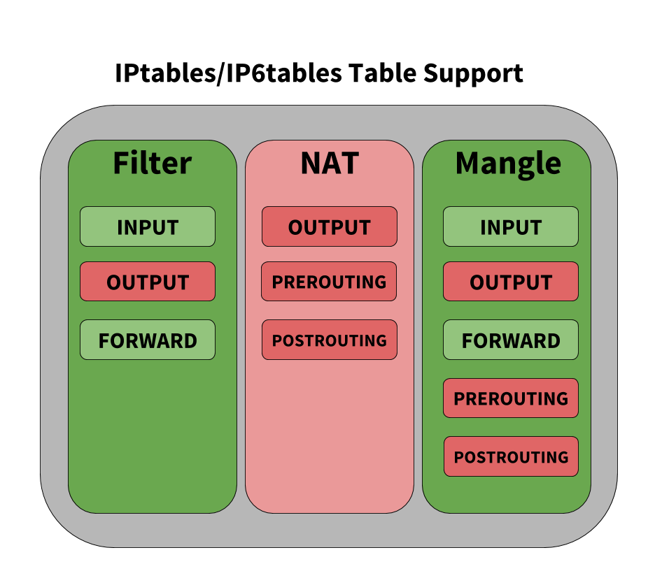
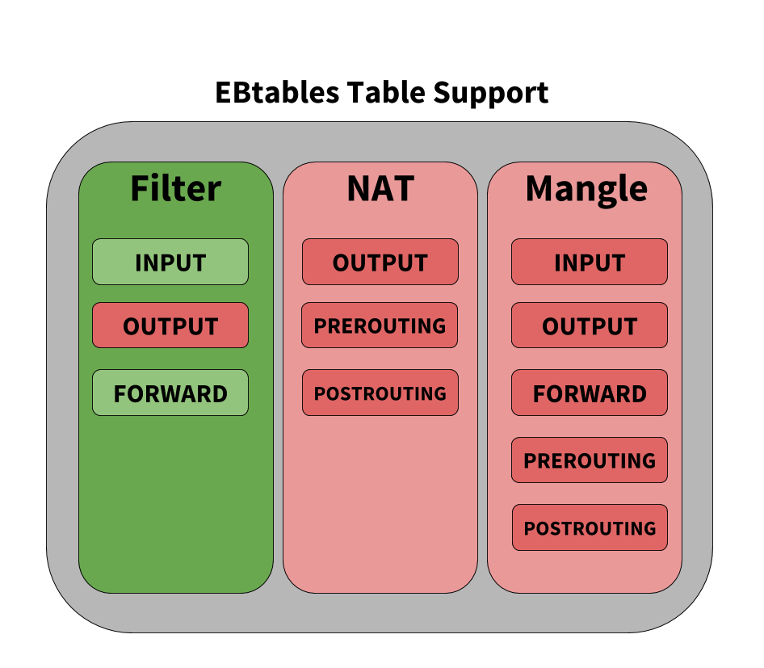
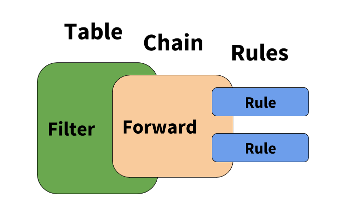
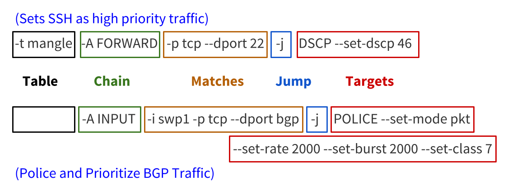
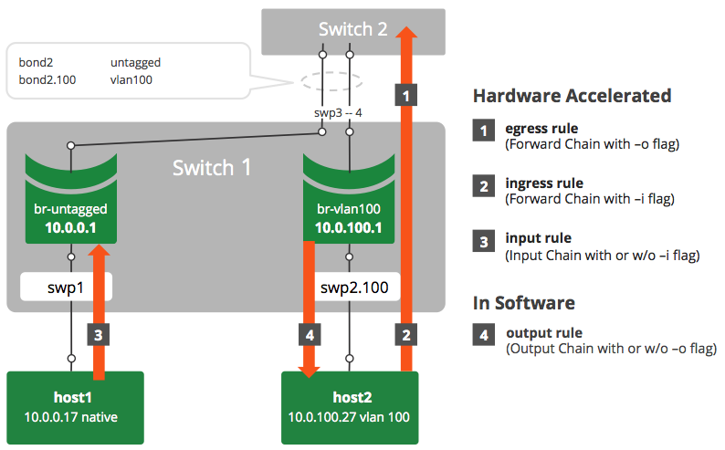

Netfilter - ACLs
Netfilter is the packet filtering framework in Cumulus Linux as well as most other Linux distributions. There are a number of tools available for configuring ACLs in Cumulus Linux, including:
-
iptables, ip6tables and ebtables are Linux userspace tools to administer filtering rules for IPv4 packets, IPv6 packets and Ethernet frames (layer 2 using MAC addresses) respectively.
-
NCLU, a Cumulus Linux-specific userspace tool for configuring custom ACLs.
-
cl-acltool, another Cumulus Linux-specific userspace tool to administer filtering rules and for configuring the default ACLs.
NCLU and cl-acltool operate on various configuration files, and use iptables, ip6tables and ebtables to install rules into the kernel. In addition to programming rules in the kernel, NCLU and cl-acltool program rules in hardware for interfaces involving switch port interfaces, which iptables, ip6tables and ebtables cannot do on their own.
In many instances, you can use NCLU to configure ACLs; however, cl-acltool must be used in some cases. The examples below show when to use which tool.
If you need help getting started setting up ACLs, run net example acl to see a basic configuration:
cumulus@leaf01:~$ net example acl Scenario========We would like to use access-lists on 'switch' to- Restrict inbound traffic on swp1 to traffic from 10.1.1.0/24 destined for 10.1.2.0/24- Restrict outbound traffic on swp2 to http, https, or ssh *switch /\ swp1 / \ swp2 / \ / \ host-11 host-12switch net commands====================Create an ACL that accepts traffic from 10.1.1.0/24 destined for 10.1.2.0/24and drops all other trafficswitch# net add acl ipv4 MYACL accept source-ip 10.1.1.0/24 dest-ip 10.1.2.0/24switch# net add acl ipv4 MYACL drop source-ip any dest-ip anyApply MYACL inbound on swp1switch# net add interface swp1 acl ipv4 MYACL inboundCreate an ACL that accepts http, https, or ssh traffic and drops allother traffic.switch# net add acl ipv4 WEB_OR_SSH accept tcp source-ip any source-port any dest-ip any dest-port httpswitch# net add acl ipv4 WEB_OR_SSH accept tcp source-ip any source-port http dest-ip any dest-port anyswitch# net add acl ipv4 WEB_OR_SSH accept tcp source-ip any source-port any dest-ip any dest-port httpsswitch# net add acl ipv4 WEB_OR_SSH accept tcp source-ip any source-port https dest-ip any dest-port anyswitch# net add acl ipv4 WEB_OR_SSH accept tcp source-ip any source-port any dest-ip any dest-port sshswitch# net add acl ipv4 WEB_OR_SSH accept tcp source-ip any source-port ssh dest-ip any dest-port anyswitch# net add acl ipv4 WEB_OR_SSH drop source-ip any dest-ip anyApply WEB_OR_SSH outbound on swp2switch# net add interface swp2 acl ipv4 WEB_OR_SSH outboundcommit the staged changesswitch# net commitVerification============switch# net show configuration acl
Contents
Understanding Traffic Rules In Cumulus Linux
Understanding Chains
Netfilter describes the mechanism for which packets are classified and controlled in the Linux kernel. Cumulus Linux uses the Netfilter framework to control the flow of traffic to, from and across the switch. Netfilter does not require a separate software daemon to run because it is part of the Linux kernel itself. Netfilter asserts policies at layers 2, 3 and 4 of the OSI model by inspecting packet and frame headers based on a list of rules. Rules are defined using syntax provided by the iptables, ip6tables and ebtables userspace applications.
The rules created by these programs inspect or operate on packets at several points in the life of the packet through the system. These five points are known as chains and are shown here:

The chains and their uses are:
-
PREROUTING: Touches packets before they are routed
-
INPUT: Touches packets once they are determined to be destined for the local system but before they are received by the control plane software
-
FORWARD: Touches transit traffic as it moves through the box
-
OUTPUT: Touches packets that are sourced by the control plane software before they are put on the wire
-
POSTROUTING: Touches packets immediately before they are put on the wire but after the routing decision has been made
Understanding Tables
When building rules to affect the flow of traffic, the individual chains can be accessed by tables. Linux provides three tables by default:
-
Filter: Classifies traffic or filters traffic
-
NAT: Applies Network Address Translation rules
Cumulus Linux does not support NAT.
-
Mangle: Alters packets as they move through the switch
Each table has a set of default chains that can be used to modify or inspect packets at different points of the path through the switch. Chains contain the individual rules to influence traffic. Each table and the default chains they support are shown below. Tables and chains in green are supported by Cumulus Linux, those in red are not supported (that is, they are not hardware accelerated) at this time.
 

Understanding Rules
Rules are the items that actually classify traffic to be acted upon. Rules are applied to chains, which are attached to tables, similar to the graphic below.

Rules have several different components; the examples below highlight those different components.

-
Table: The first argument is the table. Notice the second example does not specify a table, that is because the filter table is implied if a table is not specified.
-
Chain: The second argument is the chain. Each table supports several different chains. See Understanding Tables above.
-
Matches: The third argument(s) are called the matches. You can specify multiple matches in a single rule. However, the more matches you use in a rule, the more memory that rule consumes.
-
Jump: The jump specifies the target of the rule; that is, what action to take if the packet matches the rule. If this option is omitted in a rule, then matching the rule will have no effect on the packet's fate, but the counters on the rule will be incremented.
-
Target(s): The target can be a user-defined chain (other than the one this rule is in), one of the special built-in targets that decides the fate of the packet immediately (like DROP), or an extended target. See the Supported Rule Types and Common Usages section below for examples of different targets.
How Rules Are Parsed and Applied
All the rules from each chain are read from iptables, ip6tables and ebtables and entered in order into either the filter table or the mangle table. The rules are read from the kernel in the following order:
-
IPv6 (ip6tables)
-
IPv4 (iptables)
-
ebtables
When rules are combined and put into one table, the order determines the relative priority of the rules; iptables and ip6tables have the highest precedence and ebtables has the lowest.
The Linux packet forwarding construct is an overlay for how the silicon underneath processes packets; to that end, here are some things to be aware of:
-
The order of operations for how rules are processed is not perfectly maintained when you compare how iptables and the switch silicon process packets. The switch silicon reorders rules when switchd writes to the ASIC, whereas traditional iptables executes the list of rules in order.
-
All rules are terminating. This means once a rule is matched, the action is carried out, and no more rules are processed. The exception to this is when a SETCLASS rule is placed immediately before another rule; this exists multiple times in the default ACL configuration.
In the example below, the SETCLASS action applied with the --in-interface option, creates the internal ASIC classification, and continues to process the next rule, which does the rate-limiting for the matched protocol:-A $INGRESS_CHAIN --in-interface $INGRESS_INTF -p udp --dport $BFD_ECHO_PORT -j SETCLASS --class 7-A $INGRESS_CHAIN -p udp --dport $BFD_ECHO_PORT -j POLICE --set-mode pkt --set-rate 2000 --set-burst 2000If multiple contiguous rules with the same match criteria are applied to --in-interface, only the first rule gets processed and then terminates processing. This would also be a misconfiguration, because there is no reason to have duplicate rules with different actions.
-
When processing traffic, rules affecting the FORWARD chain that specify an ingress interface are performed prior to rules that match on an egress interface. As a workaround, rules that only affect the egress interface can have an ingress interface wildcard (currently, only swp+ and bond+ are supported as wildcard names; see below) that matches any interface applied so that you can maintain order of operations with other input interface rules. Take the following rules, for example:
-A FORWARD -i $PORTA -j ACCEPT-A FORWARD -o $PORTA -j ACCEPT <-- This rule is performed LAST (because of egress interface matching)-A FORWARD -i $PORTB -j DROPIf you modify the rules like this, they are performed in order:
-A FORWARD -i $PORTA -j ACCEPT-A FORWARD -i swp+ -o $PORTA -j ACCEPT <-- These rules are performed in order (because of wildcard match on ingress interface)-A FORWARD -i $PORTB -j DROP -
When using rules that do a mangle and a filter lookup for a packet, Cumulus Linux does them in parallel and combines the action.
-
If a switch port is assigned to a bond, any egress rules must be assigned to the bond.
-
When using the OUTPUT chain, rules must be assigned to the source. For example, if a rule is assigned to the switch port in the direction of traffic but the source is a bridge (VLAN), the traffic won't be affected by the rule and must be applied to the bridge.
-
If all transit traffic needs to have a rule applied, use the FORWARD chain, not the OUTPUT chain.
-
ebtables rules are put into either the IPv4 or IPv6 memory space depending on whether the rule utilizes IPv4 or IPv6 to make a decision. Layer 2-only rules, which match the MAC address, are put into the IPv4 memory space.
Rule Placement in Memory
INPUT and ingress (FORWARD -i) rules occupy the same memory space. A rule counts as ingress if the -i option is set. If both input and output options (-i and -o) are set, the rule is considered as ingress and occupies that memory space. For example:
-A FORWARD -i swp1 -o swp2 -s 10.0.14.2 -d 10.0.15.8 -p tcp -j ACCEPTIf you set an output flag with the INPUT chain you will get an error. For example, running cl-acltool -i on the following rule:
-A FORWARD,INPUT -i swp1 -o swp2 -s 10.0.14.2 -d 10.0.15.8 -p tcp -j ACCEPTgenerates the following error:
error: line 2 : output interface specified with INPUT chain error processing rule '-A FORWARD,INPUT -i swp1 -o swp2 -s 10.0.14.2 -d 10.0.15.8 -p tcp -j ACCEPT'However, simply removing the -o option and interface would make it a valid rule.
Enabling Nonatomic Updates
You can enable nonatomic updates for switchd, which offer better scaling because all TCAM resources are used to actively impact traffic. With atomic updates, half of the hardware resources are on standby and do not actively impact traffic.
Nonatomic updates are now table based, so they don't interrupt network traffic when new rules are installed. The rules are mapped into the following tables and are updated in this order:
-
mirror (ingress only)
-
ipv4-mac (can be both ingress and egress)
-
ipv6 (ingress only)
Updates are done incrementally, one table at a time without stopping traffic. Cumulus Linux checks if a table's rules have changed since the last time they were installed; if a table does not have any changes, then it is not reinstalled. If there are changes in a table, then the new rules are populated in new groups or slices in hardware, then that table is switched over to the new groups or slices. Finally, old resources for that table are freed. This process is repeated for each of the tables listed above. If a failure occurs during an update, the regular nonatomic mode is attempted, which interrupts network traffic. If that also fails, Cumulus Linux reverts back to the previous rules.
To always start switchd with nonatomic updates:
-
Edit /etc/cumulus/switchd.conf.
-
Add the following line to the file:
acl.non_atomic_update_mode = TRUE -
cumulus@switch:~$ sudo systemctl restart switchd.service
During nonatomic updates, traffic is stopped first, and enabled after the new configuration is written into the hardware completely.
Using iptables/ip6tables/ebtables Directly
Using iptables/ip6tables/ebtables directly is not recommended because any rules installed in these cases only are applied to the Linux kernel and are not hardware accelerated via synchronization to the switch silicon. Also running cl-acltool -i (the installation command) resets all rules and deletes anything that is not stored in /etc/cumulus/acl/policy.conf.
For example, performing:
cumulus@switch:~$ sudo iptables -A INPUT -p icmp --icmp-type echo-request -j DROPAppears to work, and the rule appears when you run cl-acltool -L:
cumulus@switch:~$ sudo cl-acltool -L ip-------------------------------Listing rules of type iptables: ------------------------------- TABLE filter :Chain INPUT (policy ACCEPT 72 packets, 5236 bytes) pkts bytes target prot opt in out source destination 0 0 DROP icmp -- any any anywhere anywhere icmp echo-requestHowever, the rule is not synced to hardware when applied in this fashion and running cl-acltool -i or reboot removes the rule without replacing it. To ensure all rules that can be in hardware are hardware accelerated, place them in /etc/cumulus/acl/policy.conf and install them by running cl-acltool -i.
Estimating the Number of Rules
To estimate the number of rules that could be created from an ACL entry, first determine if that entry is an ingress or an egress. Then determine if it is IPv4-mac or IPv6 type rule. This determines the slice to which the rule belongs. Then use the following to determine how many entries are used up for each type.
By default, each entry occupies one double wide entry, except if the entry is one of the following:
-
An entry with multiple comma-separated input interfaces is split into one rule for each input interface (listed after --in-interface below). For example, this entry splits into two rules:
-A FORWARD --in-interface swp1s0,swp1s1 -p icmp -j ACCEPT -
An entry with multiple comma-separated output interfaces is split into one rule for each output interface (listed after --out-interface below). this entry splits into two rules:
-A FORWARD --in-interface swp+ --out-interface swp1s0,swp1s1 -p icmp -j ACCEPT -
An entry with both input and output comma-separated interfaces is split into one rule for each combination of input and output interface (listed after --in-interface and --out-interface below). For example, this entry splits into four rules:
-A FORWARD --in-interface swp1s0,swp1s1 --out-interface swp1s2,swp1s3 -p icmp -j ACCEPT -
An entry with multiple L4 port ranges is split into one rule for each range (listed after --dports below). For example, this entry splits into two rules:
-A FORWARD --in-interface swp+ -p tcp -m multiport --dports 1050:1051,1055:1056 -j ACCEPT
Installing and Managing ACL Rules with NCLU
NCLU provides an easy way to create custom ACLs in Cumulus Linux. The rules you create live in the /var/lib/cumulus/nclu/nclu_acl.conf file, which gets converted to a rules file, /etc/cumulus/acl/policy.d/50_nclu_acl.rules. This way, the rules you create with NCLU are independent of the two default files in /etc/cumulus/acl/policy.d, 00control_plane.rules and 99control_plane_catch_all.rules, as the content in these files may get updated after you upgrade Cumulus Linux.
Instead of crafting a rule by hand then installing it using cl-acltool, NCLU handles many of the options automatically. For example, consider the following iptables rule:
-A FORWARD -i swp1 -o swp2 -s 10.0.14.2 -d 10.0.15.8 -p tcp -j ACCEPTYou would create this rule, called EXAMPLE1, using NCLU like this:
cumulus@switch:~$ net add acl ipv4 EXAMPLE1 accept tcp source-ip 10.0.14.2/32 source-port dest-ip 10.0.15.8/32 dest-port anycumulus@switch:~$ net pendingcumulus@switch:~$ net commitAll options, such as the -j and -p, even FORWARD in the above rule, are added automatically when you apply the rule to the control plane; NCLU figures it all out for you.
You can also set a priority value, which specifies the order in which the rules get executed, and the order in which they appear in the rules file. Lower numbers are executed first. To add a new rule in the middle, first run net show config acl, which displays the priority numbers. Otherwise, new rules get appended to the end of the list of rules in the nclu_acl.conf and 50_nclu_acl.rules files.
If you need to hand edit a rule, don’t edit the 50_nclu_acl.rules file. Instead, edit the nclu_acl.conf file.
After you add the rule, you need to apply it to an inbound or outbound interface using net add int acl; swp1 is the inbound interface in our example:
cumulus@switch:~$ net add int swp1 acl ipv4 EXAMPLE1 inboundcumulus@switch:~$ net pendingcumulus@switch:~$ net commitAfter you commit your changes, you can verify the rule you created with NCLU by running net show configuration acl:
cumulus@switch:~$ net show configuration acl acl ipv4 EXAMPLEv4 priority 10 accept tcp source-ip 10.0.14.2/32 source-port any dest-ip 10.0.15.8/32 dest-port anyinterface swp1 acl ipv4 EXAMPLE1 inboundOr you can see all of the rules installed by running cat on the 50_nclu_acl.rules file:
cumulus@switch:~$ cat /etc/cumulus/acl/policy.d/50_nclu_acl.rules [iptables]# swp1: acl ipv4 EXAMPLE1 inbound-A FORWARD --in-interface swp1 --out-interface swp2 -j ACCEPT -p tcp -s 10.0.14.2/32 -d 10.0.15.8/32 --dport 110For INPUT and FORWARD rules, apply the rule to a control plane interface using net add control-plane:
cumulus@switch:~$ net add control-plane acl ipv4 EXAMPLE1 inboundcumulus@switch:~$ net pendingcumulus@switch:~$ net commitTo remove a rule, use net del acl ipv4|ipv6|mac RULENAME:
cumulus@switch:~$ net del acl ipv4 EXAMPLE1cumulus@switch:~$ net pendingcumulus@switch:~$ net commitThis deletes all rules from the 50_nclu_acl.rules file with that name. It also deletes the interfaces referenced in the nclu_acl.conf file.
Installing and Managing ACL Rules with cl-acltool
You can manage Cumulus Linux ACLs with cl-acltool. Rules are first written to the iptables chains, as described above, and then synced to hardware via switchd.
Use iptables/ip6tables/ebtables and cl-acltool to manage rules in the default files, 00control_plane.rules and 99control_plane_catch_all.rules; they’re not aware of rules created using NCLU.
To examine the current state of chains and list all installed rules, run:
cumulus@switch:~$ sudo cl-acltool -L all ------------------------------- Listing rules of type iptables: ------------------------------- TABLE filter : Chain INPUT (policy ACCEPT 90 packets, 14456 bytes) pkts bytes target prot opt in out source destination 0 0 DROP all -- swp+ any 240.0.0.0/5 anywhere 0 0 DROP all -- swp+ any loopback/8 anywhere 0 0 DROP all -- swp+ any base-address.mcast.net/8 anywhere 0 0 DROP all -- swp+ any 255.255.255.255 anywhere ...To list installed rules using native iptables, ip6tables and ebtables, use the -L option with the respective commands:
cumulus@switch:~$ sudo iptables -L cumulus@switch:~$ sudo ip6tables -L cumulus@switch:~$ sudo ebtables -LTo flush all installed rules, run:
cumulus@switch:~$ sudo cl-acltool -F allTo flush only the IPv4 iptables rules, run:
cumulus@switch:~$ sudo cl-acltool -F ipIf the install fails, ACL rules in the kernel and hardware are rolled back to the previous state. Errors from programming rules in the kernel or ASIC are reported appropriately.
Installing Packet Filtering (ACL) Rules
cl-acltool takes access control list (ACL) rules input in files. Each ACL policy file contains iptables, ip6tables and ebtables categories under the tags [iptables], [ip6tables] and [ebtables] respectively.
Each rule in an ACL policy must be assigned to one of the rule categories above.
See man cl-acltool(5) for ACL rule details. For iptables rule syntax, see man iptables(8). For ip6tables rule syntax, see man ip6tables(8). For ebtables rule syntax, see man ebtables(8).
See man cl-acltool(5) and man cl-acltool(8) for further details on using cl-acltool; however, some examples are listed here, and more are listed later in this chapter.
By default:
-
ACL policy files are located in /etc/cumulus/acl/policy.d/.
-
All *.rules files in this directory are included in /etc/cumulus/acl/policy.conf.
-
All files included in this policy.conf file are installed when the switch boots up.
-
The policy.conf file expects rules files to have a .rules suffix as part of the file name.
Here is an example ACL policy file:
[iptables] -A INPUT --in-interface swp1 -p tcp --dport 80 -j ACCEPT -A FORWARD --in-interface swp1 -p tcp --dport 80 -j ACCEPT [ip6tables] -A INPUT --in-interface swp1 -p tcp --dport 80 -j ACCEPT -A FORWARD --in-interface swp1 -p tcp --dport 80 -j ACCEPT [ebtables] -A INPUT -p IPv4 -j ACCEPT -A FORWARD -p IPv4 -j ACCEPTYou can use wildcards or variables to specify chain and interface lists to ease administration of rules.
Interface Wildcards
Currently only swp+ and bond+ are supported as wildcard names. There may be kernel restrictions in supporting more complex wildcards likes swp1+ etc.
INGRESS = swp+ INPUT_PORT_CHAIN = INPUT,FORWARD [iptables] -A $INPUT_PORT_CHAIN --in-interface $INGRESS -p tcp --dport 80 -j ACCEPT [ip6tables] -A $INPUT_PORT_CHAIN --in-interface $INGRESS -p tcp --dport 80 -j ACCEPT [ebtables] -A INPUT -p IPv4 -j ACCEPTACL rules for the system can be written into multiple files under the default /etc/cumulus/acl/policy.d/ directory. The ordering of rules during installation follows the sort order of the files based on their file names.
Use multiple files to stack rules. The example below shows two rules files separating rules for management and datapath traffic:
cumulus@switch:~$ ls /etc/cumulus/acl/policy.d/ 00sample_mgmt.rules 01sample_datapath.rules cumulus@switch:~$ cat /etc/cumulus/acl/policy.d/00sample_mgmt.rules INGRESS_INTF = swp+ INGRESS_CHAIN = INPUT [iptables] # protect the switch management -A $INGRESS_CHAIN --in-interface $INGRESS_INTF -s 10.0.14.2 -d 10.0.15.8 -p tcp -j ACCEPT -A $INGRESS_CHAIN --in-interface $INGRESS_INTF -s 10.0.11.2 -d 10.0.12.8 -p tcp -j ACCEPT -A $INGRESS_CHAIN --in-interface $INGRESS_INTF -d 10.0.16.8 -p udp -j DROP cumulus@switch:~$ cat /etc/cumulus/acl/policy.d/01sample_datapath.rules INGRESS_INTF = swp+ INGRESS_CHAIN = INPUT, FORWARD [iptables] -A $INGRESS_CHAIN --in-interface $INGRESS_INTF -s 192.0.2.5 -p icmp -j ACCEPT -A $INGRESS_CHAIN --in-interface $INGRESS_INTF -s 192.0.2.6 -d 192.0.2.4 -j DROP -A $INGRESS_CHAIN --in-interface $INGRESS_INTF -s 192.0.2.2 -d 192.0.2.8 -j DROPInstall all ACL policies under a directory:
cumulus@switch:~$ sudo cl-acltool -i -P ./rules Reading files under rules Reading rule file ./rules/01_http_rules.txt ... Processing rules in file ./rules/01_http_rules.txt ... Installing acl policy ... Done.Install all rules and policies included in /etc/cumulus/acl/policy.conf:
cumulus@switch:~$ sudo cl-acltool -iSpecifying which Policy Files to Install
By default, any .rules file you configure in /etc/cumulus/acl/policy.d/ get installed by Cumulus Linux. To add other policy files to an ACL, you need to include them in /etc/cumulus/acl/policy.conf. For example, in order for Cumulus Linux to install a rule in a policy file called 01_new.datapathacl, you would add include /etc/cumulus/acl/policy.d/01_new.rules to policy.conf, as in this example:
cumulus@switch:~$ sudo nano /etc/cumulus/acl/policy.conf # # This file is a master file for acl policy file inclusion # # Note: This is not a file where you list acl rules. # # This file can contain: # - include lines with acl policy files # example: # include <filepath> # # see manpage cl-acltool(5) and cl-acltool(8) for how to write policy files # include /etc/cumulus/acl/policy.d/01_new.datapathaclHardware Limitations on Number of Rules
The maximum number of rules that can be handled in hardware is a function of the platform type (switch silicon, like Tomahawk) and a mix of IPv4 and/or IPv6. See the HCL to determine which platform type applies to a particular switch.
If the maximum number of rules for a particular table is exceeded, cl-acltool -i generates the following error:
error: hw sync failed (sync_acl hardware installation failed) Rolling back .. failed.The nonatomic mode rules are used when nonatomic updates are enabled (see above).
Broadcom Tomahawk Limits
|
Direction |
Atomic Mode IPv4 Rules |
Atomic Mode IPv6 Rules |
Nonatomic Mode IPv4 Rules |
Nonatomic Mode IPv6 Rules |
|
Ingress |
512 |
512 |
1024 |
1024 |
|
Egress |
512 |
256 |
1024 |
512 |
Broadcom Trident II+ Limits
|
Direction |
Atomic Mode IPv4 Rules |
Atomic Mode IPv6 Rules |
Nonatomic Mode IPv4 Rules |
Nonatomic Mode IPv6 Rules |
|
Ingress |
4096 |
4096 |
8192 |
8192 |
|
Egress |
512 |
256 |
1024 |
512 |
Broadcom Trident II and Helix4 Limits
|
Direction |
Atomic Mode IPv4 Rules |
Atomic Mode IPv6 Rules |
Nonatomic Mode IPv4 Rules |
Nonatomic Mode IPv6 Rules |
|
Ingress |
1024 |
1024 |
2048 |
2048 |
|
Egress |
512 |
256 |
1024 |
512 |
Mellanox Spectrum Limits
The Mellanox Spectrum ASIC has one common TCAM for both ingress and egress, and it may be used for other non-ACL-related resources. However, the number of supported rules varies with the TCAM profile specified for the switch.
|
Profile |
Atomic Mode IPv4 Rules |
Atomic Mode IPv6 Rules |
Nonatomic Mode IPv4 Rules |
Nonatomic Mode IPv6 Rules |
|
default |
1750 |
750 |
3500 |
1500 |
|
ipmc-heavy |
200 |
80 |
400 |
160 |
|
acl-heavy |
3000 |
2000 |
6000 |
2500 |
Supported Rule Types
The iptables/ip6tables/ebtables construct tries to layer the Linux implementation on top of the underlying hardware but they are not always directly compatible. Here are the supported rules for chains in iptables, ip6tables and ebtables.
To learn more about any of the options shown in the tables below, run iptables -h [name of option]. The same help syntax works for options for ip6tables and ebtables.
root@leaf1# ebtables -h tricolorpolice<...snip...>tricolorpolice option: --set-color-mode STRING setting the mode in blind or aware --set-cir INT setting committed information rate in kbits per second --set-cbs INT setting committed burst size in kbyte --set-pir INT setting peak information rate in kbits per second --set-ebs INT setting excess burst size in kbyte --set-conform-action-dscp INT setting dscp value if the action is accept for conforming packets --set-exceed-action-dscp INT setting dscp value if the action is accept for exceeding packets --set-violate-action STRING setting the action (accept/drop) for violating packets --set-violate-action-dscp INT setting dscp value if the action is accept for violating packetsSupported chains for the filter table:INPUT FORWARD OUTPUTiptables/ip6tables Rule Support
|
Rule Element |
Supported |
Unsupported |
|
Matches |
|
|
|
Standard Targets |
|
|
|
Extended Targets |
Unique to Cumulus Linux:
|
|
ebtables Rule Support
|
Rule Element |
Supported |
Unsupported |
|
Matches |
|
|
|
Standard Targets |
|
|
|
Extended Targets |
Unique to Cumulus Linux:
|
|
Other Unsupported Rules
-
Rules that have no matches and accept all packets in a chain are currently ignored. This probably has side effects in the sense that the rules below them do get hit, when normally they wouldn't.
-
Chain default rules (which are ACCEPT) are also ignored.
Common Examples
Policing Control Plane and Data Plane Traffic
You can configure quality of service for traffic on both the control plane and the data plane. By using QoS policers, you can rate limit traffic so incoming packets get dropped if they exceed specified thresholds.
Counters on POLICE ACL rules in iptables do not currently show the packets that are dropped due to those rules.
Use the POLICE target with iptables. POLICE takes these arguments:
-
--set-class value: Sets the system internal class of service queue configuration to value.
-
--set-rate value: Specifies the maximum rate in kilobytes (KB) or packets.
-
--set-burst value: Specifies the number of packets or kilobytes (KB) allowed to arrive sequentially.
-
--set-mode string: Sets the mode in KB (kilobytes) or pkt (packets) for rate and burst size.
For example, to rate limit the incoming traffic on swp1 to 400 packets/second with a burst of 100 packets/second and set the class of the queue for the policed traffic as 0, set this rule in your appropriate .rules file:
-A INPUT --in-interface swp1 -j POLICE --set-mode pkt --set-rate 400 --set-burst 100 --set-class 0Here is another example of control plane ACL rules to lock down the switch. You specify them in /etc/cumulus/acl/policy.d/00control_plane.rules:
INGRESS_INTF = swp+ INGRESS_CHAIN = INPUT INNFWD_CHAIN = INPUT,FORWARD MARTIAN_SOURCES_4 = "240.0.0.0/5,127.0.0.0/8,224.0.0.0/8,255.255.255.255/32" MARTIAN_SOURCES_6 = "ff00::/8,::/128,::ffff:0.0.0.0/96,::1/128" # Custom Policy Section SSH_SOURCES_4 = "192.168.0.0/24" NTP_SERVERS_4 = "192.168.0.1/32,192.168.0.4/32" DNS_SERVERS_4 = "192.168.0.1/32,192.168.0.4/32" SNMP_SERVERS_4 = "192.168.0.1/32" [iptables] -A $INNFWD_CHAIN --in-interface $INGRESS_INTF -s $MARTIAN_SOURCES_4 -j DROP -A $INGRESS_CHAIN --in-interface $INGRESS_INTF -p ospf -j POLICE --set-mode pkt --set-rate 2000 --set-burst 2000 --set-class 7 -A $INGRESS_CHAIN --in-interface $INGRESS_INTF -p tcp --dport bgp -j POLICE --set-mode pkt --set-rate 2000 --set-burst 2000 --set-class 7 -A $INGRESS_CHAIN --in-interface $INGRESS_INTF -p tcp --sport bgp -j POLICE --set-mode pkt --set-rate 2000 --set-burst 2000 --set-class 7 -A $INGRESS_CHAIN --in-interface $INGRESS_INTF -p icmp -j POLICE --set-mode pkt --set-rate 100 --set-burst 40 --set-class 2 -A $INGRESS_CHAIN --in-interface $INGRESS_INTF -p udp --dport bootps:bootpc -j POLICE --set-mode pkt --set-rate 100 --set-burst 100 --set-class 2 -A $INGRESS_CHAIN --in-interface $INGRESS_INTF -p tcp --dport bootps:bootpc -j POLICE --set-mode pkt --set-rate 100 --set-burst 100 --set-class 2 -A $INGRESS_CHAIN --in-interface $INGRESS_INTF -p igmp -j POLICE --set-mode pkt --set-rate 300 --set-burst 100 --set-class 6 # Custom policy -A $INGRESS_CHAIN --in-interface $INGRESS_INTF -p tcp --dport 22 -s $SSH_SOURCES_4 -j ACCEPT -A $INGRESS_CHAIN --in-interface $INGRESS_INTF -p udp --sport 123 -s $NTP_SERVERS_4 -j ACCEPT -A $INGRESS_CHAIN --in-interface $INGRESS_INTF -p udp --sport 53 -s $DNS_SERVERS_4 -j ACCEPT -A $INGRESS_CHAIN --in-interface $INGRESS_INTF -p udp --dport 161 -s $SNMP_SERVERS_4 -j ACCEPT # Allow UDP traceroute when we are the current TTL expired hop -A $INGRESS_CHAIN --in-interface $INGRESS_INTF -p udp --dport 1024:65535 -m ttl --ttl-eq 1 -j ACCEPT -A $INGRESS_CHAIN --in-interface $INGRESS_INTF -j DROPSetting DSCP on Transit Traffic
The examples here use the mangle table to modify the packet as it transits the switch. DSCP is expressed in decimal notation in the examples below.
[iptables] #Set SSH as high priority traffic.-t mangle -A FORWARD -p tcp --dport 22 -j DSCP --set-dscp 46 #Set everything coming in SWP1 as AF13-t mangle -A FORWARD --in-interface swp1 -j DSCP --set-dscp 14#Set Packets destined for 10.0.100.27 as best effort-t mangle -A FORWARD -d 10.0.100.27/32 -j DSCP --set-dscp 0#Example using a range of ports for TCP traffic-t mangle -A FORWARD -p tcp -s 10.0.0.17/32 --sport 10000:20000 -d 10.0.100.27/32 --dport 10000:20000 -j DSCP --set-dscp 34Verifying DSCP Values on Transit Traffic
The examples here use the DSCP match criteria in combination with other IP, TCP and interface matches to identify traffic and count the number of packets.
[iptables] #Match and count the packets that match SSH traffic with DSCP EF-A FORWARD -p tcp --dport 22 -m dscp --dscp 46 -j ACCEPT#Match and count the packets coming in SWP1 as AF13-A FORWARD --in-interface swp1 -m dscp --dscp 14 -j ACCEPT#Match and count the packets with a destination 10.0.0.17 marked best effort-A FORWARD -d 10.0.100.27/32 -m dscp --dscp 0 -j ACCEPT#Match and count the packets in a port range with DSCP AF41-A FORWARD -p tcp -s 10.0.0.17/32 --sport 10000:20000 -d 10.0.100.27/32 --dport 10000:20000 -m dscp --dscp 34 -j ACCEPTChecking the Packet and Byte Counters for ACL Rules
To verify the counters, using the above example rules, first send test traffic matching the patterns through the network. The following example generates traffic with mz, which can be installed on host servers or even on Cumulus Linux switches. Once traffic is sent to validate the counters, they are matched on switch1 use cl-acltool.
# Send 100 TCP packets on host1 with a DSCP value of EF with a destination of host2 TCP port 22: cumulus@host1$ mz eth1 -A 10.0.0.17 -B 10.0.100.27 -c 100 -v -t tcp "dp=22,dscp=46" IP: ver=4, len=40, tos=184, id=0, frag=0, ttl=255, proto=6, sum=0, SA=10.0.0.17, DA=10.0.100.27, payload=[see next layer] TCP: sp=0, dp=22, S=42, A=42, flags=0, win=10000, len=20, sum=0, payload= # Verify the 100 packets are matched on switch1cumulus@switch1$ sudo cl-acltool -L ip-------------------------------Listing rules of type iptables:-------------------------------TABLE filter :Chain INPUT (policy ACCEPT 9314 packets, 753K bytes) pkts bytes target prot opt in out source destinationChain FORWARD (policy ACCEPT 0 packets, 0 bytes) pkts bytes target prot opt in out source destination 100 6400 ACCEPT tcp -- any any anywhere anywhere tcp dpt:ssh DSCP match 0x2e 0 0 ACCEPT all -- swp1 any anywhere anywhere DSCP match 0x0e 0 0 ACCEPT all -- any any 10.0.0.17 anywhere DSCP match 0x00 0 0 ACCEPT tcp -- any any 10.0.0.17 10.0.100.27 tcp spts:webmin:20000 dpts:webmin:2002# Send 100 packets with a small payload on host1 with a DSCP value of AF13 with a destination of host2:cumulus@host1$ mz eth1 -A 10.0.0.17 -B 10.0.100.27 -c 100 -v -t ip IP: ver=4, len=20, tos=0, id=0, frag=0, ttl=255, proto=0, sum=0, SA=10.0.0.17, DA=10.0.100.27, payload=# Verify the 100 packets are matched on switch1cumulus@switch1$ sudo cl-acltool -L ip-------------------------------Listing rules of type iptables:-------------------------------TABLE filter :Chain INPUT (policy ACCEPT 9314 packets, 753K bytes) pkts bytes target prot opt in out source destinationChain FORWARD (policy ACCEPT 0 packets, 0 bytes) pkts bytes target prot opt in out source destination 100 6400 ACCEPT tcp -- any any anywhere anywhere tcp dpt:ssh DSCP match 0x2e 100 7000 ACCEPT all -- swp3 any anywhere anywhere DSCP match 0x0e 100 6400 ACCEPT all -- any any 10.0.0.17 anywhere DSCP match 0x00 0 0 ACCEPT tcp -- any any 10.0.0.17 10.0.100.27 tcp spts:webmin:20000 dpts:webmin:2002# Send 100 packets on host1 with a destination of host2:cumulus@host1$ mz eth1 -A 10.0.0.17 -B 10.0.100.27 -c 100 -v -t ip IP: ver=4, len=20, tos=56, id=0, frag=0, ttl=255, proto=0, sum=0, SA=10.0.0.17, DA=10.0.100.27, payload=# Verify the 100 packets are matched on switch1cumulus@switch1$ sudo cl-acltool -L ip-------------------------------Listing rules of type iptables:-------------------------------TABLE filter :Chain INPUT (policy ACCEPT 9314 packets, 753K bytes) pkts bytes target prot opt in out source destinationChain FORWARD (policy ACCEPT 0 packets, 0 bytes) pkts bytes target prot opt in out source destination 100 6400 ACCEPT tcp -- any any anywhere anywhere tcp dpt:ssh DSCP match 0x2e 100 7000 ACCEPT all -- swp3 any anywhere anywhere DSCP match 0x0e 0 0 ACCEPT all -- any any 10.0.0.17 anywhere DSCP match 0x00 0 0 ACCEPT tcp -- any any 10.0.0.17 10.0.100.27 tcp spts:webmin:20000 dpts:webmin:2002Still workingFiltering Specific TCP Flags
The example solution below creates rules on the INPUT and FORWARD chains to drop ingress IPv4 and IPv6 TCP packets when the SYN bit is set and the RST, ACK and FIN bits are reset. The default for the INPUT and FORWARD chains allows all other packets. The ACL is applied to ports swp20 and swp21. After configuring this ACL, new TCP sessions that originate from ingress ports swp20 and swp21 will not be allowed. TCP sessions that originate from any other port are allowed.
INGRESS_INTF = swp20,swp21[iptables]-A INPUT,FORWARD --in-interface $INGRESS_INTF -p tcp --syn -j DROP[ip6tables]-A INPUT,FORWARD --in-interface $INGRESS_INTF -p tcp --syn -j DROPThe --syn flag in the above rule matches packets with the SYN bit set and the ACK, RST and FIN bits are cleared. It is equivalent to using -tcp-flags SYN,RST,ACK,FIN SYN. For example, the above rule could be re-written as:
-A INPUT,FORWARD --in-interface $INGRESS_INTF -p tcp --tcp-flags SYN,RST,ACK,FIN SYN -j DROPExample Scenario
The following example scenario demonstrates where several different rules are applied to show what is possible.

Following are the configurations for the two switches used in these examples. The configuration for each switch appears in /etc/network/interfaces on that switch.
Switch 1 Configuration
cumulus@switch1:~$ net show configuration files.../etc/network/interfaces=======================auto swp1 iface swp1 auto swp2 iface swp2 auto swp3 iface swp3 auto swp4 iface swp4 auto bond2 iface bond2 bond-slaves swp3 swp4 auto br-untagged iface br-untagged address 10.0.0.1/24 bridge_ports swp1 bond2 bridge_stp on auto br-tag100 iface br-tag100 address 10.0.100.1/24 bridge_ports swp2.100 bond2.100 bridge_stp on ...Switch 2 Configuration
cumulus@switch2:~$ net show configuration files ... /etc/network/interfaces======================= auto swp3 iface swp3 auto swp4 iface swp4 auto br-untagged iface br-untagged address 10.0.0.2/24 bridge_ports bond2 bridge_stp on auto br-tag100 iface br-tag100 address 10.0.100.2/24 bridge_ports bond2.100 bridge_stp on auto bond2 iface bond2 bond-slaves swp3 swp4 ...Egress Rule
The following rule blocks any TCP with destination port 200 traffic going from host1 or host2 through the switch (corresponding to rule 1 in the diagram above).
[iptables] -A FORWARD -o bond2 -p tcp --dport 200 -j DROPIngress Rule
The following rule blocks any UDP traffic with source port 200 going from host1 through the switch (corresponding to rule 2 in the diagram above).
[iptables] -A FORWARD -i swp2 -p udp --sport 200 -j DROPInput Rule
The following rule blocks any UDP traffic with source port 200 and destination port 50 going from host1 to the switch (corresponding to rule 3 in the diagram above).
[iptables] -A INPUT -i swp1 -p udp --sport 200 --dport 50 -j DROPOutput Rule
The following rule blocks any TCP traffic with source port 123 and destination port 123 going from Switch 1 to host2 (corresponding to rule 4 in the diagram above).
[iptables] -A OUTPUT -o br-tag100 -p tcp --sport 123 --dport 123 -j DROPCombined Rules
The following rule blocks any TCP traffic with source port 123 and destination port 123 going from any switch port egress or generated from Switch 1 to host1 or host2 (corresponding to rules 1 and 4 in the diagram above).
[iptables] -A OUTPUT,FORWARD -o swp+ -p tcp --sport 123 --dport 123 -j DROPThis also becomes 2 ACLs, and is effectively the same as:
[iptables]-A FORWARD -o swp+ -p tcp --sport 123 --dport 123 -j DROP -A OUTPUT -o swp+ -p tcp --sport 123 --dport 123 -j DROPLayer 2-only Rules/ebtables
The following rule blocks any traffic with source MAC address 00:00:00:00:00:12 and destination MAC address 08:9e:01:ce:e2:04 going from any switch port egress/ingress.
[ebtables] -A FORWARD -s 00:00:00:00:00:12 -d 08:9e:01:ce:e2:04 -j DROPUseful Links
Caveats and Errata
Not All Rules Supported
As mentioned in the Supported Rules section above, not all iptables, ip6tables or ebtables rules are supported. Refer to that section for specific rule support.
Bridge Traffic Limitations
Bridge traffic that matches LOG ACTION rules are not logged in syslog, as the kernel and hardware identify packets using different information.
Log Actions Cannot Be Forwarded
Logged packets cannot be forwarded. The hardware cannot both forward a packet and send the packet to the control plane (or kernel) for logging. To emphasize this, a log action must also have a drop action.
Tomahawk Hardware Limitations
Rate Limiting per Pipeline, Not Global
On Tomahawk switches, the field processor (FP) polices on a per-pipeline basis instead of globally, as with a Trident II switch. If packets come in to different switch ports that are on different pipelines on the ASIC, they may be rate limited differently.
For example, your switch is set so BFD if rate limited to 2000 packets per second. When the BFD packets are received on port1/pipe1 and port2/pipe2, they would each be rate limited at 2000 pps, thus the switch is rate limiting at 4000 pps overall. Since there are four pipelines on a Tomahawk switch, you could see a 4 increase of your configured rate limits.
Ping-pong Mode Enabled by Default
In Cumulus Linux, the ping-pong atomic policy update mode is enabled by default. If you have Tomahawk switches and plan to use SPAN and/or mangle rules, you must disable ping-pong mode.
To do so, set the value for acl.non_atomic_update_mode to true in /etc/cumulus/switchd.conf:
acl.non_atomic_update_mode = TRUEThen restart switchd.
Packets Undercounted during ACL Updates
On Tomahawk switches, when updating egress FP rules, some packets do not get counted. This results in an underreporting of counts during ping-pong/incremental switchover.
iptables Interactions with cl-acltool
Since Cumulus Linux is a Linux operating system, the iptables commands can be used directly and does work. However, you should consider using cl-acltool instead because:
-
Without using cl-acltool, rules are not installed into hardware.
-
Running cl-acltool -i (the installation command) resets all rules and deletes anything that is not stored in /etc/cumulus/acl/policy.conf.
For example, running the following command works:
cumulus@switch:~$ sudo iptables -A INPUT -p icmp --icmp-type echo-request -j DROPAnd the rules appear when you run cl-acltool -L:
cumulus@switch:~$ sudo cl-acltool -L ip-------------------------------Listing rules of type iptables:-------------------------------TABLE filter :Chain INPUT (policy ACCEPT 72 packets, 5236 bytes)pkts bytes target prot opt in out source destination0 0 DROP icmp -- any any anywhere anywhere icmp echo-requestHowever, running cl-acltool -i or reboot removes them. To ensure all rules that can be in hardware are hardware accelerated, place them in /etc/cumulus/acl/policy.conf and run cl-acltool -i.
Where to Assign Rules
-
If a switch port is assigned to a bond, any egress rules must be assigned to the bond.
-
When using the OUTPUT chain, rules must be assigned to the source. For example, if a rule is assigned to the switch port in the direction of traffic but the source is a bridge (VLAN), the traffic won’t be affected by the rule and must be applied to the bridge.
-
If all transit traffic needs to have a rule applied, use the FORWARD chain, not the OUTPUT chain.
Generic Error Message Displayed after ACL Rule Installation Failure
After an ACL rule installation failure, a generic error message like the following is displayed:
cumulus@switch:$ sudo cl-acltool -i -p 00control_plane.rulesUsing user provided rule file 00control_plane.rulesReading rule file 00control_plane.rules ...Processing rules in file 00control_plane.rules ...error: hw sync failed (sync_acl hardware installation failed)Installing acl policy... Rolling back ..failed.Dell S3048-ON Supports only 24K MAC Addresses
The Dell S3048-ON has a limit of 24576 MAC address entries, instead of 32K for other 1G switches.